You probably heard about fermentation as processes that can take weeks, months or even years, but some can also be very quick. From a few minutes to several hours.
Even during the early stage of the fermentation process, beneficial bacteria and enzymes are created (for the good of our digestive and immune system!). The end result is a change in taste, texture and nutritional value.
In Japanese culture, these quick-fermented products are used to create small side dishes. They are eaten as a small snack in between courses because they offer a totally different flavour and texture to the rest of the meal. It cleans the pallet, neutralises tastes and offers a refreshing counter balance to heavy or fatty dishes. We also like them in a sandwich or on a toast, or just with a bowl of rice.
Due to its quick process, you won't get the tang of a sour pickle. It can therefore be a starting point for the most sensitive among you.
Want to discover more about those "impatient pickles"?
Read this page about the "tsukémono" book of Peter van Berckel. Most of our recipes come from there.
Yes, you will have to beat the cucumber. Because beating the cucumber into pieces gives you nice jagged shapes and also crushes the cell structure so the vegetable releases moisture more quickly.
In a small saucepan, bring the sesame seeds, soy sauce, vinegar, apple syrup, ginger and chilli to the boil
Let cool to room temperature
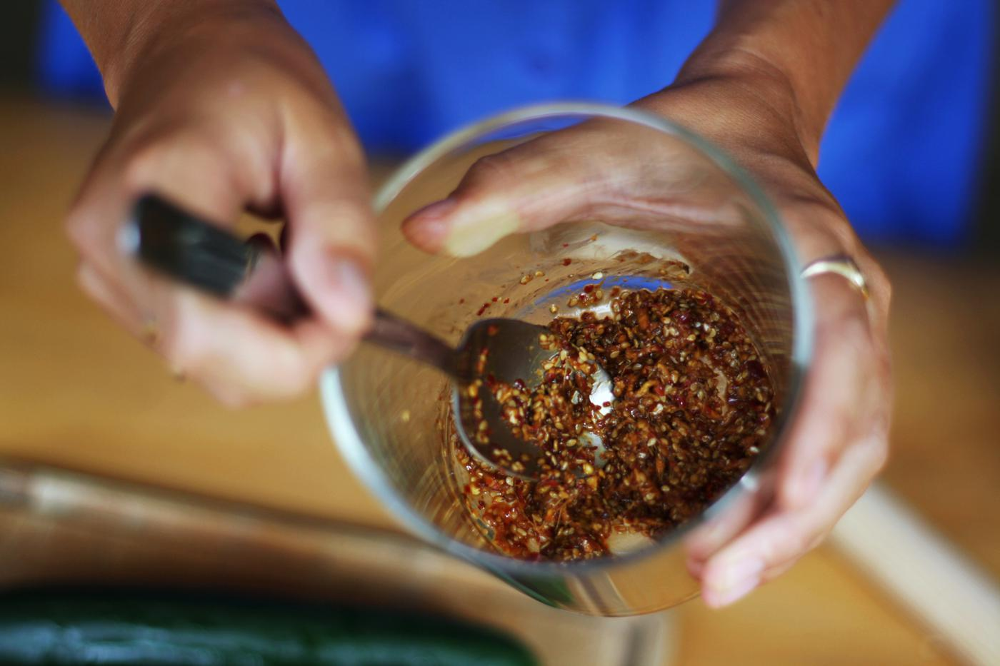I reserved my marinade directly in my glass jar to let it cool
Smash the cucumber
Remove the stem of the cucumber
Put some salt in the palm of your hand and rub the cucumber vigorously with the salt. The skin becomes porous and the cucumber immediately begins to ooze moisture
Place the cucumber on a cutting board and compassionately beat it into irregular pieces with the rolling pin
Break the flesh into small pieces with your hands
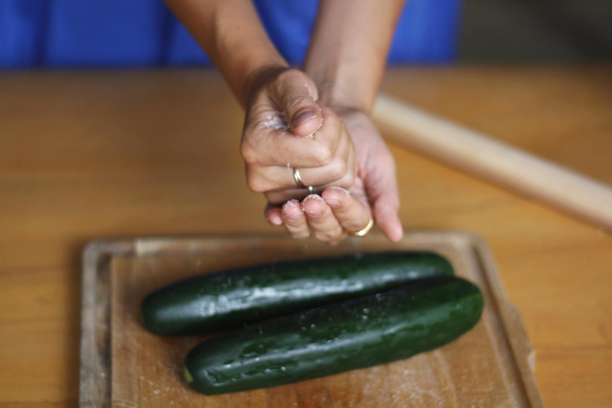Dropping a generous handful of salt into the palm of my hand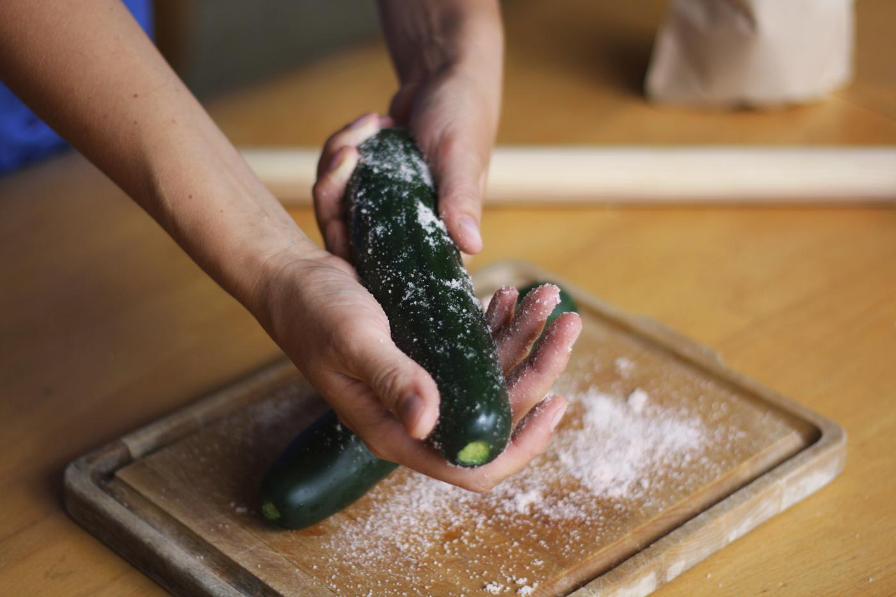Applying salt all over the cucumber, rubbing it vigorously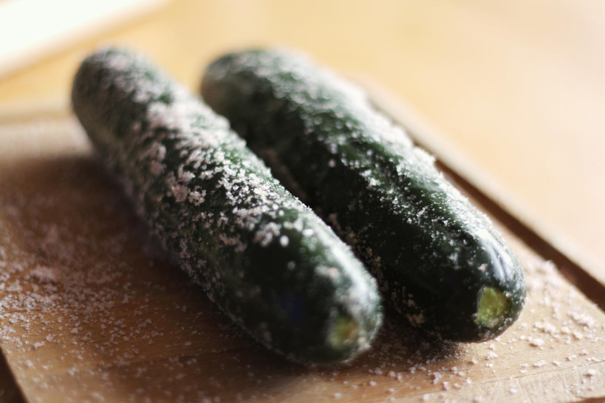The cucumber should immediately begin to ooze moisture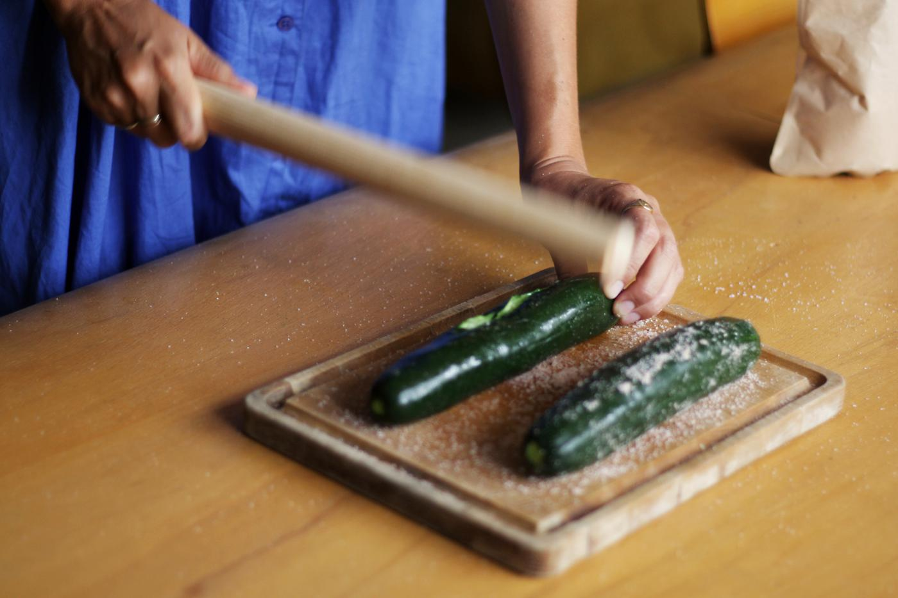While beating the cucumber, cracks appear. Slightly rotate the cucumber and repeat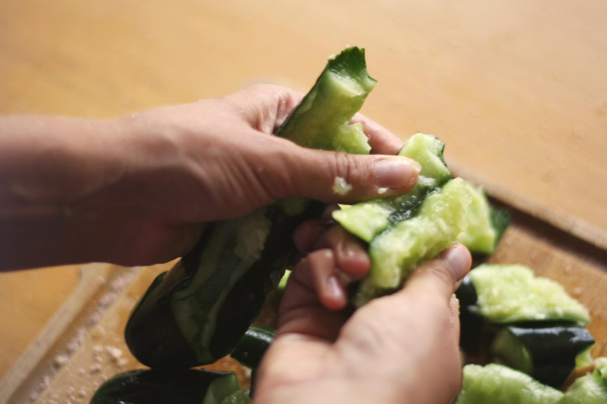Finishing breaking it into small pieces with the hand
Pickle press
Put the cucumber pieces in your container and mix them with your hands into the marinade
Put the press lid on top and push it lightly
Let pickle at room temperature for 1 hours
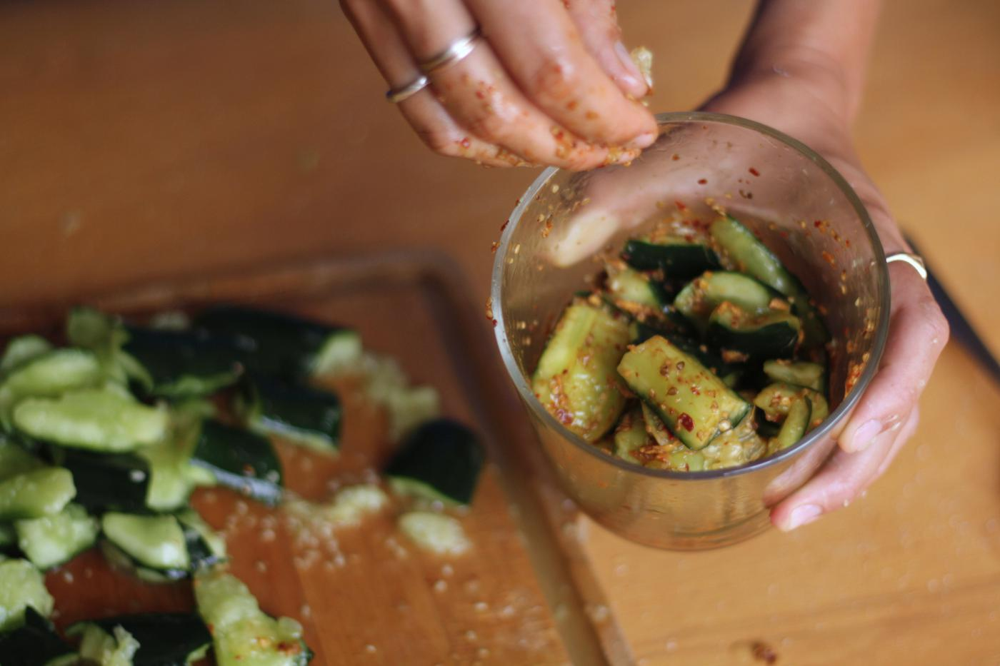Mixing the smashed cucumber with the marinade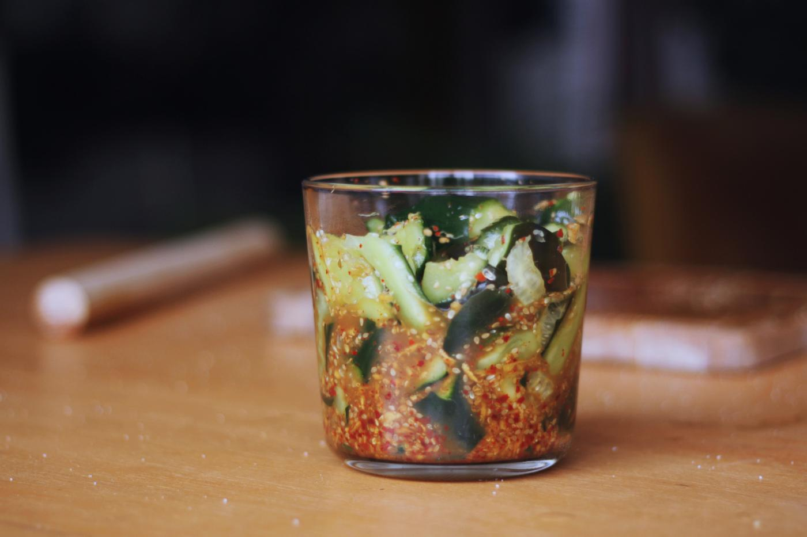Ready to let the magic of the fermentation begin!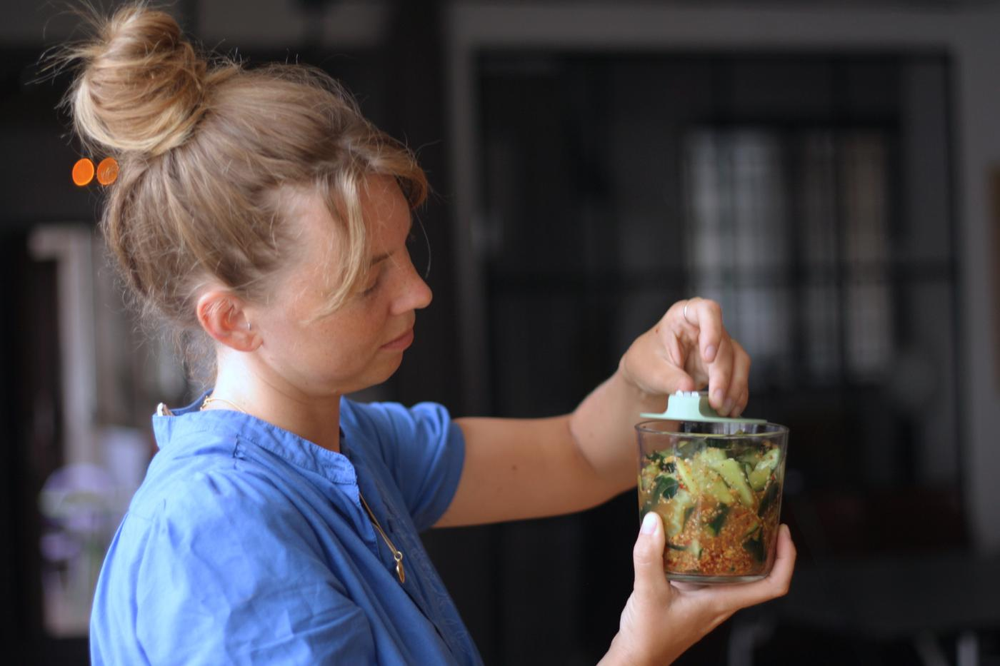Don't forget to cover it with something relevant, like a press lid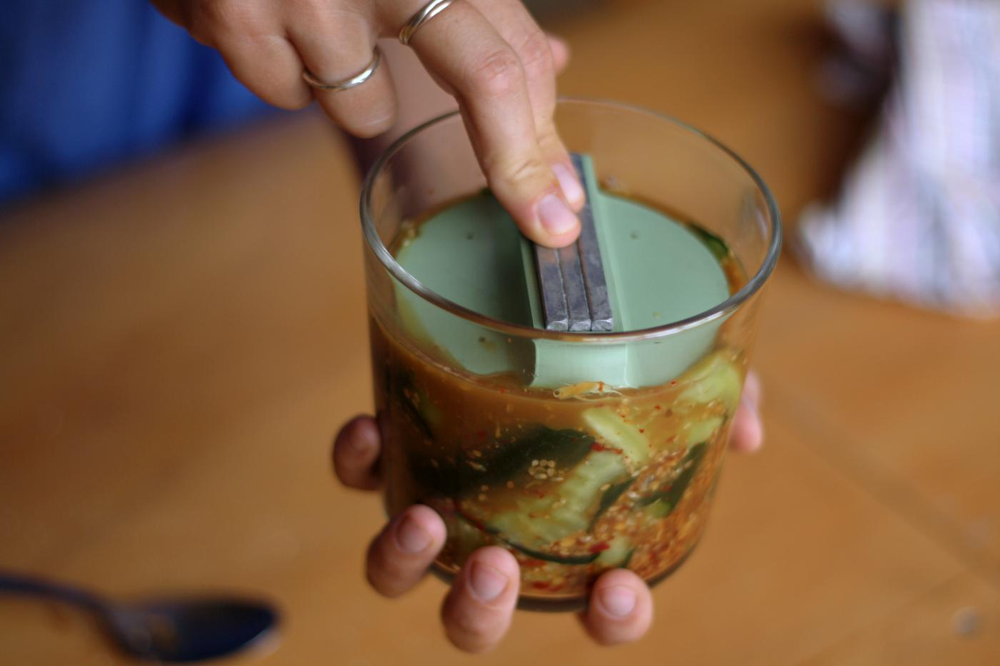It is better to slightly add pressure on the lid before letting it ferment for maximum efficiency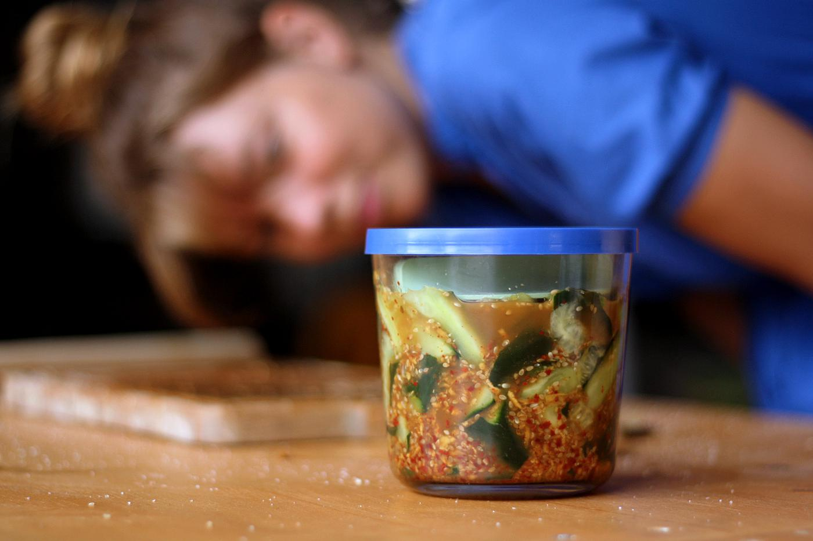Observing the magic operate for 1 hour
What's the press lid for?
The pressure on salty food accelerates the chemical and physical transformation process of vegetables. What this does is collapse the cell walls of the vegetable, releasing the moisture and concentrating the flavor. So adding some pressure to the veggies helps the salt do its work.